Don’t lose your habits to doomscrolling
Dear Brain locks TikTok, Instagram and YouTube until today’s habits are done.
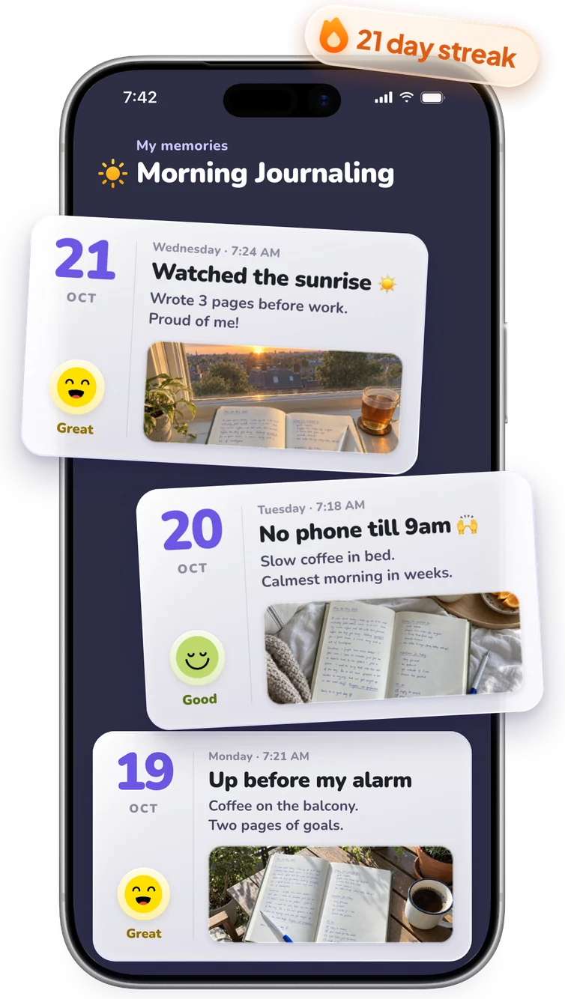
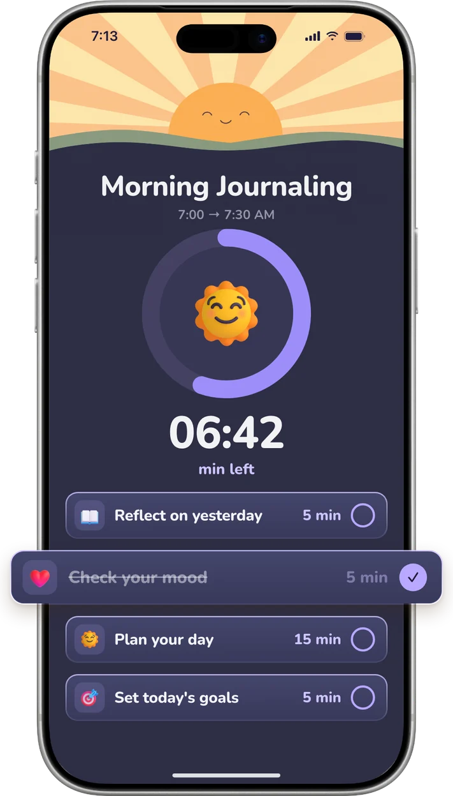
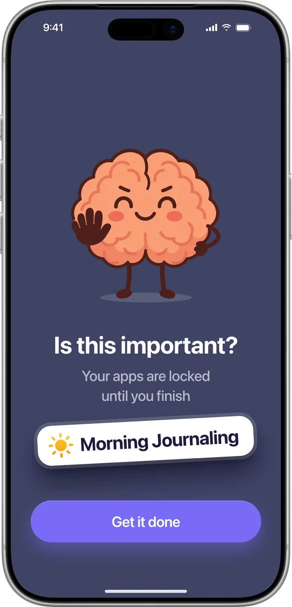
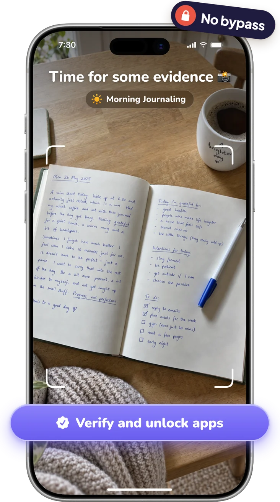
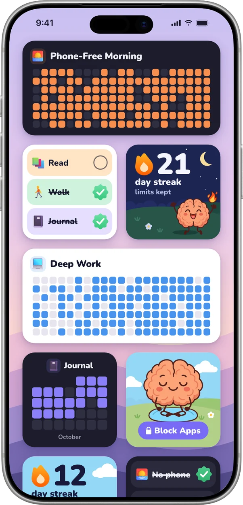
- 100+ habits to start from
- Photo proof in Strict Mode
- No ads, no tracking
It’s not you. It’s the feed.
Feeds are built to keep you scrolling. One quick check turns into an hour, and the habit you planned quietly slips away.
- Open it for one thing
- An hour is gone
- Habit skipped, again
Three steps, every day
No big life overhaul. Just a habit, a lock and a photo.
-
Pick a habit
Start from 100+ ready-made habits, from reading to running, or make your own. Give it a time.
-
Your apps lock
When it’s time, the apps you picked lock until the habit is done. No snooze, no “five more minutes”.
-
Snap, unlock, streak
Take a photo as proof. Your apps open again, the day is saved, and your streak grows.
Strict means strict
Most blockers come with a skip button. Dear Brain doesn’t. Your apps stay locked until the habit is done, and in Strict Mode a photo has to prove it.
Lock any app
TikTok, Instagram, YouTube, games. You choose what gets locked.
Time blocks that repeat
Phone-free mornings, deep work, bedtime. Apps lock on their own, every day.
Your apps, your rules
Limit apps by opens, by steps walked, or by where you are.
Keep the apps, lose the feeds
Hide Reels and Shorts in Safari, and keep the parts you need.
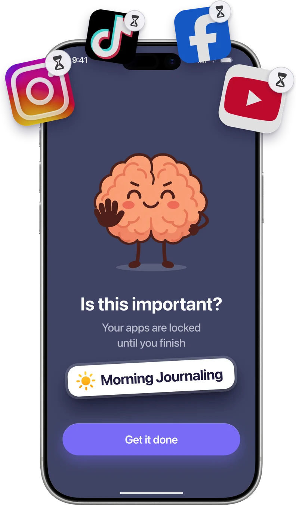
Proof, not promises
In Strict Mode your apps unlock only after you snap a photo of the habit, done. The open journal. The running shoes. The clean kitchen. No more cheating yourself.
- Snap a pic, Dear Brain checks it, your apps unlock
- No bypass button for those 1 AM moments
A camera roll full of wins
Every proof photo becomes a memory, with your mood and a line about your day. Scroll back through your own life, not someone else’s highlight reel.
- Photo, mood and a short note for every habit
- Streaks and trophies that keep you coming back
Everything your habits need
Built around one idea: real life first, feeds later.
-
A timer that keeps you going
Break a habit into small steps and watch the clock. Apps open when you finish.
-
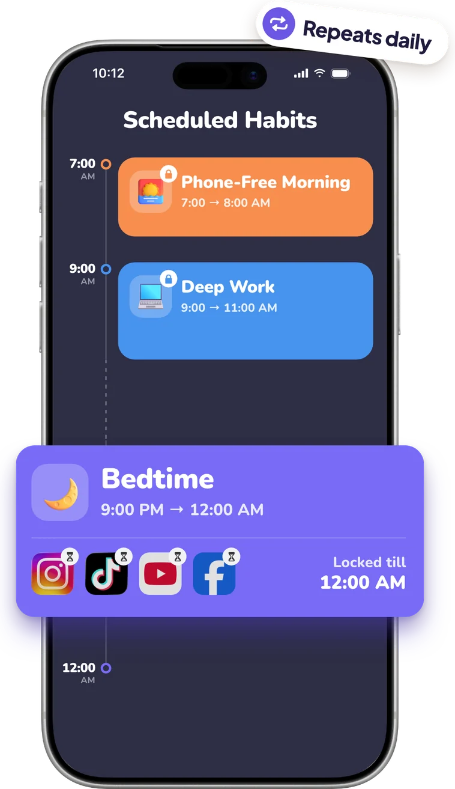
Habits on a schedule
Set time blocks like Phone-Free Morning or Bedtime. They repeat, and apps lock by themselves.
-
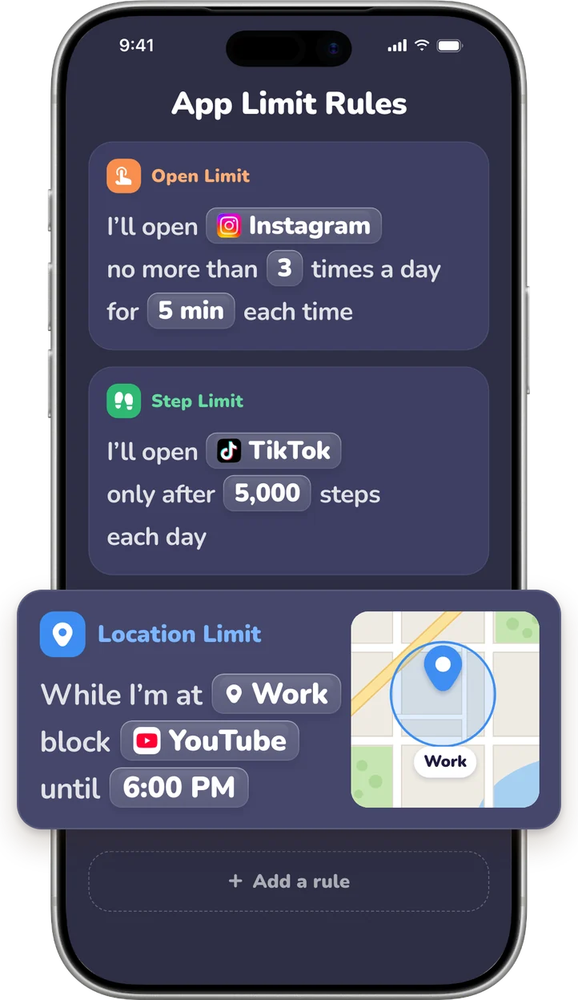
Rules for every app
Instagram 3 times a day. TikTok only after 5,000 steps. No YouTube while you’re at work.
-
Your streak on your Home Screen
Widgets show today’s habits and your streak every time you pick up your phone.
Made for real, everyday life
Running, reading, cooking, practicing, stretching, watering the plants. Small habits that add up to days you’re proud of.
- Morning run6:48 AM
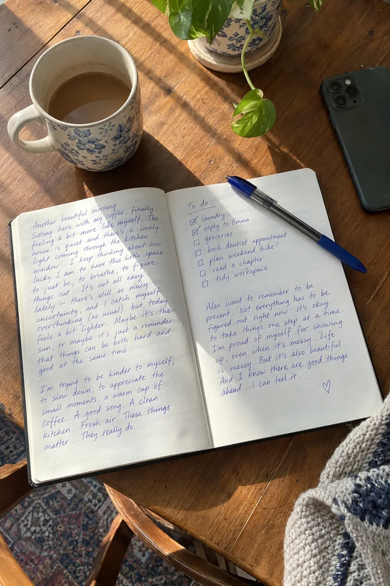
Journaling7:24 AM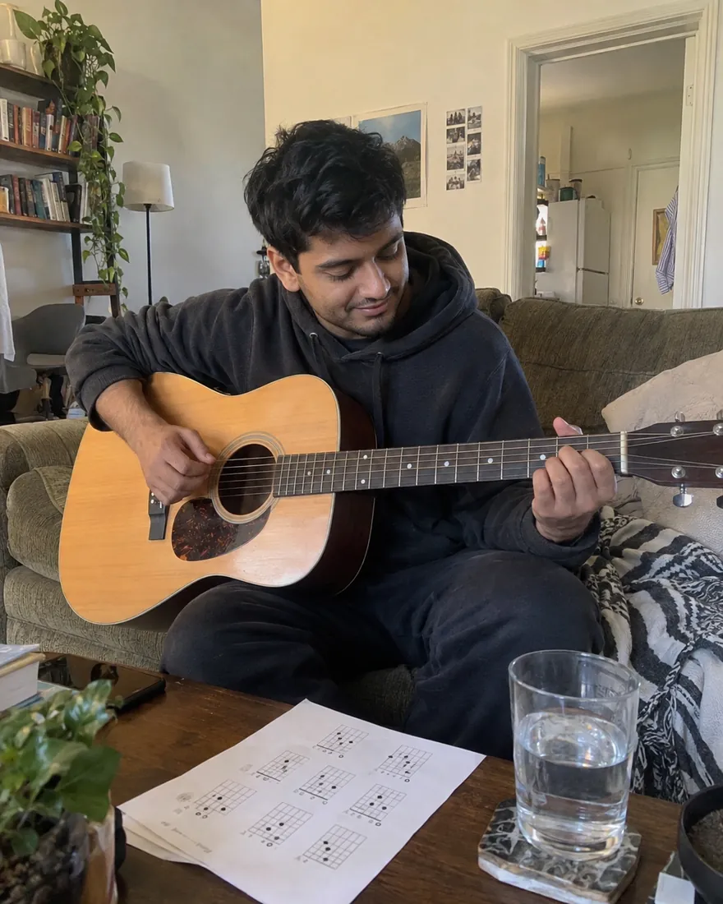
Guitar practice5:30 PM- Cook dinner7:05 PM
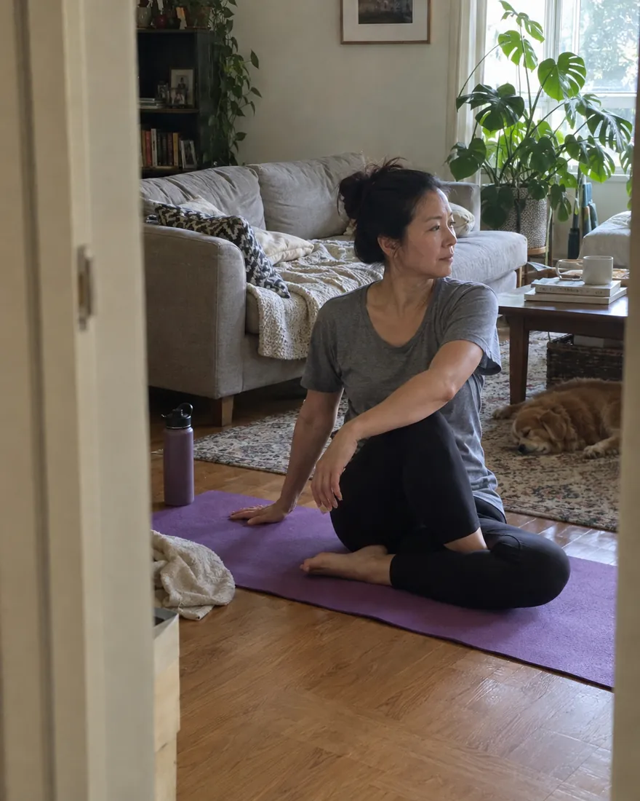
Morning stretch7:15 AM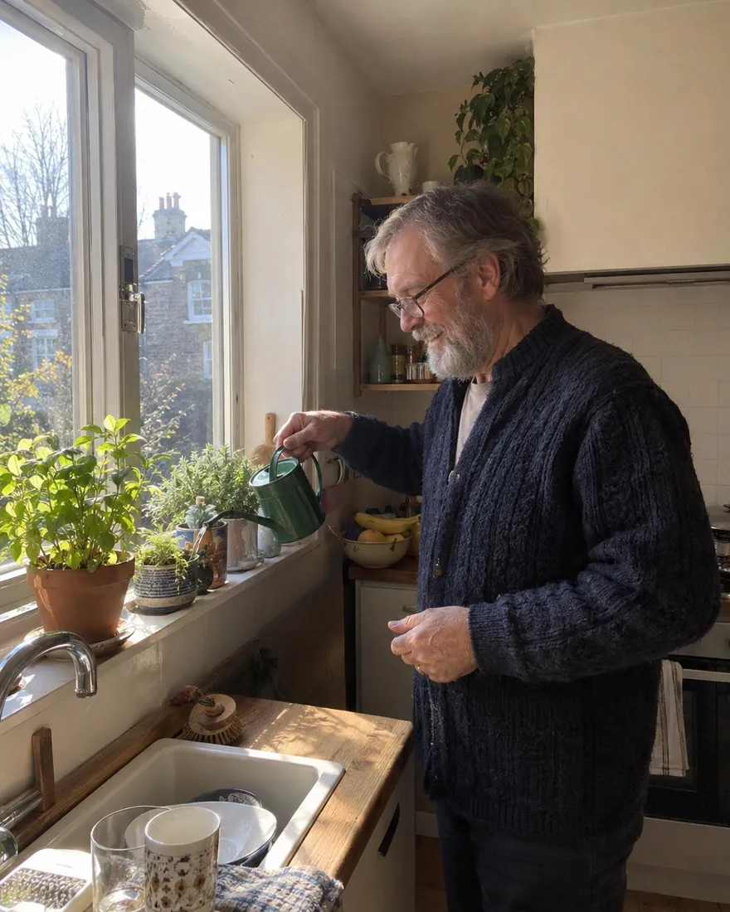
Water the plants8:02 AM
Private by design
No ads and no tracking. Your habits, journal and photos are stored on your iPhone and backed up to your own iCloud.
Questions?
What is Dear Brain?
An iPhone app that helps you build habits and scroll less. You pick the habits, Dear Brain locks the apps that pull you away until they’re done, and every finished habit becomes a memory in your journal.
How strict is the app blocker?
As strict as you want. During a habit, the apps you picked stay locked until you finish. Turn on Strict Mode and they open only after you snap a photo of the habit, done.
Which apps can I block?
Any app you choose: TikTok, Instagram, YouTube, games and more. You can also set rules, like a few opens a day, a step goal before TikTok, or no YouTube at work.
Do I have to delete social media?
No. Keep your apps. Dear Brain locks them while you do your habits, and in Safari it can hide Reels and Shorts so you keep the useful parts without the endless feed.
What if I miss a day?
Nothing dramatic. Days you didn’t plan a habit never break your streak, and trophies you’ve earned are yours to keep. Just start again tomorrow.
Are my photos and notes private?
Yes. Your habits, journal and photos are stored on your iPhone and backed up to your own iCloud, and there are no ads or tracking. In Strict Mode, the proof photo is checked by an AI service to verify the habit.